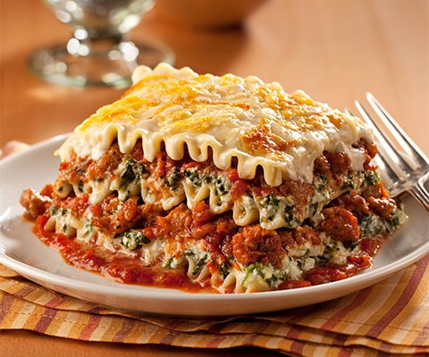

Hearty Vegetable Lasagna

Description
A hearty lasagna packed with vegetables, cheese and flavor.
Ingredients :
- 16 ounce lasagna noodles
- 1 pound fresh mushrooms, diced
- 3/4 cup chopped green bell pepper
- 3/4 cup chopped onion
- 3 cloves garlic, minced
- 2 tblsp vegetable oil
- 2 jars pasta sauce
- 1 tsp dried basil
- 15 ounce part-skim ricotta cheese
- 4 cups shredded mozarella cheese
- 2 eggs
- half cup grated Parmesan cheese
Steps :
- Cook the lasagna noodles in a large pot of boiling water for 10 minutes, or until al dente. Rinse with cold water, and drain.
- In a large saucepan, cook and stir mushrooms, green peppers, onion, and garlic in oil. Stir in pasta sauce and basil; bring to a boil. Reduce heat, and simmer 15 minutes.
- Mix together ricotta, 2 cups mozzarella cheese, and eggs.
- Preheat oven to 350 degrees F (175 degrees C). Spread 1 cup tomato sauce into the bottom of a greased 9x13 inch baking dish. Layer 1/2 each, lasagna noodles, ricotta mix, sauce, and Parmesan cheese. Repeat layering, and top with remaining 2 cups mozzarella cheese.
- Bake, uncovered, for 40 minutes. Let stand 15 minutes before serving.